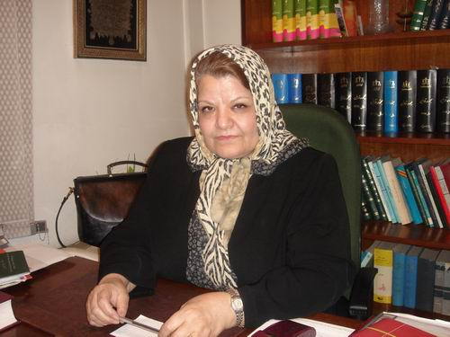

سال گذشته بود که «کانون وکلای دادگستری» پانزده روز را بدون داشتن رئیس گذراند. ماجرا از این قرار بود که در انتخابات تعیین هیئت رئیسه جدید کانون، برای اولین بار یک زن با اختلاف آرای چشمگیری با منتخب دوم، برنده شده بود. شاید شوک از این اتفاق بی سابقه، شاید ساختارهای مردسالار حاکم در تار و پود جامعه که «کانون وکلای دادگستری» هم از ان مبرا نیست و شاید هم هر دو این عوامل سبب شده بود که کانون وکلا از پذیرش این انتخاب سر باز زند. این نهاد مدنی روزهای پر تب و تاب و عجین با گمانه زنی ها و بحث های بسیاری را تجربه کرد، غیرت می گوید:« من بالاخره از حق خودم گذشت کردم که کانون وکلا دچار هرج و مرج نشود.» حالا او اولین زنی است که سمت نایب رئیسی «کانون وکلای دادگستری» را عهده دار شده است. وکالت پرونده های بسیاری را برعهده داشته است، پر سر و صداترین آنها شاید پرونده «مهرانگیز کار» و «شهلا لاهیجی» بعد از کنفرانس برلین باشد. این هم حاصل یک بعدازظهر بهاری، دفتر وکالت «فریده غیرت» و گفت و گوهایی از نابرابری ها و تناقضات قانونی در امر «طلاق» و «تعدد زوجات» :

خانم غیرت! من در قانون ندیدم که جایی ذکر شده باشد مرد حق اختیار چند زن را دارد. آیا مبنای این امر صرفا شرع است؟
بله و در شرع هم اگر بخواهیم در این باره دقیق صحبت کنیم عده ای از علما معتقد هستند که مساله تعدد زوجات تعلیق به امر محال شده است. چرا که می گویند شرط شده است که مرد اگر رعایت عدل را بین زنان خویش نکند اختیار همسر دیگرخلاف است. بحثی که مطرح می شود این است که اگر مرد همسر فعلی خود را به اندازه همسر دوم دوست داشته باشد اصلا دیگر همسر دومی اختیار نمی کند. اگر همسر دیگری انتخاب می کند شاید تنها یک درصد دید خیرخواهانه ای ممکن است در برخی جوامع و برخی مقاطع خاص تاریخی وجود داشته باشد که برای مثال برهه زمانی که در اثر جنگ دخترهای زیادی بی پناه می شوند .اما به طور متعارف مردی که همسری دارد و زنی دیگر اختیار می کند، حتما زن دوم شرایط رجحانی بر زن اول دارد، در غیر این صورت مرد دست به چنین کاری نمی زد. بنابراین می بینیم که ظرف عدالت اصلا در این باره رعایت نشده است و چون شرط عدالت نیست عده ای از فقها- برای مثال آیت الله بجنوردی- می گویند که این امر تعلیق به امر محال است.
دادگاه مبنای عدالت را چه می داند؟
متاسفانه دادگاه بسیار خشک در این باره رفتار می کند و مبنای عدالت را رعایت تساوی از نظر مسایل مادی می داند و بس. می گوید خورد و خوراک، لباس، مسکن و رفتار ظاهری مثل هم باشد کافی است. دادگاه اصلا امکان بررسی ندارد که ببیند مرد ابراز عشق و محبت بیشتری به یکی از زن ها می کند یا نه، چرا که این امور مربوط به حیطه شخصی زندگی هستند و اینگونه است که دادگاه هم تنها به ظواهر بسنده می کند. حتا وقتی ترک انفاق برای زن را مطرح می کنیم، دادگاه می آید و می گوید نان که بهت می دهد، آب که می دهد، در خانه تو هم زندگی می کند، پس ترک انفاق مطرح نیست. من پرونده ای داشتم که مرد در خانه ای که در ان زندگی می کرد هیچ چیزی نمی اورد، یعنی یخچال خانه خالی،در خانه یک دانه سیب زمینی پیدا نمی شد و حداقل زندگی هم فراهم نبود، چرا که آقا زندگی دیگری با زن دیگری داشت. مددکار که برای بررسی آمد نظر داد که در این خانه هیچی نیست، اما قاضی نپذیرفت و نظر داد که خانم! مگر نه اینکه تو با این آقا در یک خانه زندگی می کنی؟ پس این اگر گرسنگی می کشد تو را هم گرسنگی می دهد، پس تو در شرایط مساوی هستی.
بنا برقانون فعلی کشور، زن در چه مواردی حق طلاق دارد؟
قانون ما که بر مبنای فقه شیعه هست حق طلاق را به طور مطلق به مرد داده است. ازدواج در قوانین ما که ان هم مبتنی بر فقه شیعه است، همه شروط وقوانین و شروعش از زن است. زن هست که از بین افراد متقاضی ازدواج یک نفر را انتخاب می کند، در اخرین مرحله که به ازدواج می رسیم باز زن است که صیغه ایجاب را می گوید. زن می گوید:«زوجتک نفسی» و مرد می گوید «قبلت». تا به آنجا می رسد که زن می گوید بله، وقتی بله را گفت تمام اختیارات از زن سلب می شود و از اینجا به بعد اختیار در دست مرد است.و اگر زن بخواهد طلاق بگیردشرایط بسیار دشواری دارد. به طور کلی در شرع و فقه مساله عسر و حرج و کراهت است که به زن اجازه طلاق می دهد. مجلس ششم خواست وارد بحث عسر و حرج بشود که تا حد بسیار کمی توانست وارد مصادیق این موضوع شود. و محاکم قضایی ما هم متاسفانه در این زمینه بسیار سخت گیر هستند. برای مثال اگر زنی اعلام کند که من از این مرد کراهت دارم و بدم میاد و تحملش را ندارم، دادگاه به آسانی زیر بار نمی رود.در عسر و حرج نیز که فقها و حقوقدان های ما بحث های مفصلی درباره ان کرده اند گفته اند که زن اگر دچار عسرت و تنگنا بشود حق طلاق دارد، منتها اثبات ان عسرت و تنگنا خود بسیار دشوار است. البته در سال های اخیر راهکارهایی برای مقابله با این موضوع مطرح شده است که در هنگام عقد حق طلاق را برای زن منظور کنند که این امر تا حدود زیادی توانسته است این نقیصه را جبران کند و ما خود در مشاوره های ازدواج که می دهیم همیشه می گوییم که دختر حق طلاق را در عقد نامه ذکر کند. مهم ترین شرط نیز به نظر من همین حق طلاق است. البته محضرهای ما در این باره خیلی خشک رفتار می کنند. من موردی داشتم که خانم به ده محضر مراجعه کرده بود و سردفترهای این محاضر زیر بار اینکه شروط ضمن عقد را اضافه کنند نمی رفتند و من محضری را که می دانستم این امر را انجام می دهد را به ایشان معرفی کردم تا مراجعه کنند.
می توان از محضرهایی که از اضافه کردن شروط ضمن عقد سرباز می زنند شکایت کرد؟
بله! چرا که هیچ مجوزی برای اینکه از اضافه کردن شروط سرباز زنند ندارند. البته من موردی نشنیدم که از این محاضر شکایت کنند. چرا که بالاخره در هنگام ازدواج کسی که به دنبال امر خیر است دیگر به دنبال شکایت و دادگاه نیست. متاسفانه بحث طلاق در مملکت ما بحث بسیارمهمی است و چنان جامعه ما را دچار تنگنا کرده است که حدندارد. خانواده ها برای مقابله با ان حق طلاقی که برای مرد وجود دارد برای دخترهایشان مهریه های سنگین قرارمی دهند که این مهریه های سنگین بزرگترین لطمه ها را به خود دختر می زند. از نظر شرعی هم مهریه سنگین خلاف است، چرا که شرع هم می گوید باید زیر بار دینی رفت که از عهده انجام ان بتوان بر امد. البته از نظر شرعی نمی توان برای مهریه سقف تعیین کرد، بنابراین بحث هایی که در مجلس هفتم برای تعیین سقف مهریه مطرح شده است از اساس خلاق شرع است. تربیت جامعه باید گونه ای باشد که خانواده ها به سوی مهریه های این چنینی نروند، امکانات قانونی ما برای زن باید به گونه ای باشد که زن احساس عدم امنیت نکند.
هنوز هم مردان را به دلیل عدم پرداخت مهریه زندانی می کنند؟
خیر! دستور داده شده است که دیگر مردها را به دلیل عدم پرداخت مهریه زندانی نکنند. البته محاکم هم در این مورد به دو گونه عمل می کنند.یک گروه قبل از انکه مرد را به زندان بفرستندتقاضای تقسیط مهریه را می پذیرند، اما عده دیگر می گویند مرد باید اول به زندان برود و از انجا تقاضای تقسیط بدهد که این بستگی به تحلیل خود قضات دارد و بس.
من در قانون فعلی ندیدم که اشاره شده باشد مرد برای اختیار همسری دیگر نیاز به اجازه همسر اول و اجازه دادگاه دارد. این یکی از مواردی بود که در قانون حمایت خانواده قبل از انقلاب ذکر شده بود. چطور است که هنوز به قانونی که منسوخ شده است استناد می شود؟
این امر در قانون خانواده بعد از انقلاب هم هست، و جنبه ای کیفری یعنی شش ماه زندان برای عاقد و مردی که این امر را بی اجازه همسر اول انجام دهد منظور شده است که متاسفانه به دستور علما این مجازات کیفری لغو شد و اینک تنها به عنوان یک تخلف عادی محسوب می شود. و واقعیت این است که الان جریمه ای را برای ازدواج مجدد مرد بی اجازه زن اول نداریم و عملا این مجازات تنها چیزی تشریفاتی است که در قانون ذکر شده و اجرا نمی شود. حال که به قانون حمایت خانواده قبل از انقلاب اشاره کردید باید بگویم برخلاف تصور ان عده ای که فکر می کنند چون این قانون در حکومت سابق تصویب شده بود برخلاف موازین شرع است ابدا اینگونه نبود. این قانون در آن زمان به امضای آیت الله حکیم و سایر مراجع رسیده بود. قانون حمایت خانواده برای زن و مرد حق طلاق برابر قایل بود، این بهترین شیوه برای جلوگیری از خودسری های یک طرفه مرد در امر طلاق است.
مجلس ششم سن ازدواج دختر را به سیزده سال افزایش داد و البته این نکته را متذکر شد که اگر ولی تشخیص بدهد دختر را می تواند زیر سیزده سال هم شوهر دهد.حال اگر دختری را پدر زیر سیزده سال شوهر داد، بعد از اینکه این دختر رشید شد آیا می تواند شکایت کند که در ان زمان رشید نبودم و حال این شوهر را نمی خواهم؟
یکی از تعارض های قانون ما این است که سن بلوغ و مسئولیت پذیری در قانون کیفری دو چیز مختلف هستند. اسلام و شریعت سن صغر را قبل از سن بلوغ می دانند و بلوغ را برای دختر نه سال تمام قمری در نظر می گیرند. پدر می تواند دخترش را قبل از سیزده سالگی شوهر دهد و این دختر هم وقتی رشید شد حق شکایت ندارد. این در حالی است که بر مبنای قانون دختر در سن هجده سالگی حق معامله دارد، در همان سن نه سالگی مسئولیت کیفری را باید بپذیرد. اما حق ندارد از شوهر و ازدواجی که هیچ نقش و تصمیم گیری در ان نداشته است به دادگاه شکایت کند! این ها تناقضات دردناکی است که در جای جای قانون ما به چشم می خورد. من همیشه گفته ام و باز هم می گویم که قانون ما نیازی به اصلاح ندارد، نیاز به تغییر بنیادین دارد.
اگر پدر بخواهد دختر را زیر سیزده سال شوهر دهد نیاز به اجازه دادگاه دارد؟
خیر! البته ظاهرا می گویند که باید تجویزی بشود و پزشکی معاینه کند تا ببینند دختر به بلوغ و رشد رسیده است یا خیر که ان هم در بسیاری موارد اعمال نمی شود.
اخیرا هم که آیت الله جناتی فتوا دادند دختر بالغ نیاز به اذن پدر برای ازدواج ندارد.
ببینید! در تعیین حداقل سن ازدواج بین فقهای مختلف اختلاف بسیار است. متاسفم بگویم که در مورد مساله ای بسیار بی اهمیت و از سوی دیگر بسیار مهم اینگونه نگاه می شود. واقعیت این است که علمای ما نسبت به مسایل زنان حساسیت خاصی دارند. مساله تعیین حداقل سن ازدواج با دیدی که انهانگاه می کنند انقدر مهم نیست و در عین حال می تواند بسیار هم مهم باشد. یک دختر سیزده ساله یا زیر سیزده سال اگر ازدواج کند، چیزی از زندگی و شوهر نمی فهمد. حتا مساله بلوغ نیز تابع جغرافیا است. دختری که در آذربایجان زندگی می کند با دختری که در خوزستان ازدواج می کند ساختمان بدنی و فکری بسیار متفاوتی دارد.سیزده سال برای دختر آذربایجلانی سنی بسیار پایین است، در حالیکه برای آب و هوای گرم منطقه جنوب و شیوه این زندگی نوعی دیگر است. قانون مدنی به صراحت می گوید دختر باکره برای ازدواج نیاز به اجازه پدر دارد و فتواهایی از این دست نیز تاکنون چاره گشا نبوده است.
برای ازدواج موقت چطور؟ نیاز به اذن پدر هست؟
دختر باکره حق ازدواج موقت ندارد.
اما عملا نمونه هایی را می بینیم که دختر باکره ازدواج موقت می کند.
خوب خلاف قانون و شرع عمل شده است. قانون و شرع به صراحت تصریح کرده اند که دختر باکره حق ازدواج منقطع ندارد.
در قانون ما تصریح شده است که اگر زنی ایرانی قصد ازدواج با مردی غیر ایرانی دارد، علاوه بر اذن پدر به اجازه وزارت امور خارجه نیز نیاز دارد. امری که عملا موانع برای زن را بسیار می کند. در حالیکه برای مردان چنین محدودیتی را منظور نکرده است...
اینجا چون بحث قبول تابعیت دیگر مطرح است، مسلمه ایرانی حتما نیاز به کسب اجازه مقامات دارد. و چون بر مبنای قانون ما با ازدواج با یک غیر ایرانی تابعیت از زن سلب می شود، چنین محدودیتی را برای او منظور کرده اند. البته پشت این قانون یک فلسفه ملی هم وجود دارد و خیلی هم نمی توان مخالف این قانون بود.شخصا معتقدم برای مرد نیز باید چنین قانونی را منظور کرد. البته اکثرا می بینیم که دختران ما که در خارج از کشور با مردان غیر ایرانی ازدواج می کنند به شیوه آنها ازدواج کرده و اصلا از وزارت امور خارج اجازه نمی گیرند و بعدا هم می توانند آن عقد را در اینجا هم تنفیذ کنند.
با این همه تنگنای قانونی در امر طلاق و تعدد زوجات زن ها چه باید بکنند؟
الان تنها راهی که با توجه به قانون متناقض ما و حساسیت شدید علما که من حقیقتا نمی دانم چرا تا بحث زنان می شود به سرعت گارد می گیرند می توان انجام داد، قید حق طلاق در هنگام عقد برای دختر است. من حتا این موضوع را در اوایل انقلاب از زبان خود آیت الله خمینی هم شنیدم که گفتند در برابر حقی که قانون به مرد داده است، برای دخترهایتان شرط طلاق را قید کنید. مساله مهم این است که بحث طلاق در دوران نفاق و زمانی مطرح می شود که راه گفت و گوها بین زن و مرد به سرانجامی نرسیده است، وگرنه سایر شروط معمولا در دوران صلح و صفای زندگی مطرح می شود که در بسیاری موارد با گفت و گو می توان انها را حل کرد.